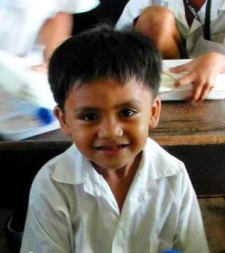

Ammasi Vilmar

Andaya Willy
Habil Allen Kyle
Mantilla John Cedric
Rizaldo Michael
Ramos James Enzo

Asis Paolo
Pajaroja Joshua

Gutierrez Jeff

Markova: Comfort Gay is a powerful film that examines the intersecting themes of war, identity, and sexuality through the life of Walter Dempster Jr., a Filipino “comfort gay” who suffered abuse during World War II. The movie vividly portrays the harsh realities of wartime occupation while also shedding light on the deeply personal struggles Markova faced as a marginalized individual. Its storytelling captures both the physical suffering and the lasting psychological scars caused by discrimination and violence. Although the film attempts to balance heavy subject matter with moments of humor, some tonal inconsistencies disrupt the emotional flow. Certain narrative choices also leave a few aspects of Markova’s broader context underexplored. Nevertheless, the strong performances and historical relevance give the film depth and emotional resonance. In the end, Markova: Comfort Gay stands as a meaningful tribute to Markova’s resilience and an important acknowledgment of LGBTQ+ experiences often overlooked in Philippine history.
Watching Markova Comfort Gay felt like encountering a story I didn’t realize had been missing from my understanding of both LGBTQ+ history and Philippine wartime narratives. What struck me most was the contrast between Markova’s soft-spoken demeanor in old age and the brutality of the experiences he recounts there’s a quiet strength there that lingers long after the film ends. At the same time, I found the movie’s tonal shifts challenging moments of humor or lightness, while characteristic of Filipino cinema, sometimes seemed at odds with the depth of Markova’s trauma. Yet despite that unevenness, the film left a strong emotional imprint on me because it honors someone who survived not just war, but erasure. It made me reflect on how many queer stories remain untold, and how vital it is for films like this to exist not just as historical documents, but as acts of recognition and dignity.
A Heartbreaking True Story This irrevocably moving and heartbreaking film draws from the horrors of Markova's WWII experiences, including an abusive brother rejecting his homosexuality and victimization by Japanese soldiers. As an elderly man, isolated and yearning for belonging, he shares his story with an unsympathetic journalist, seeking the validation that eludes him. The storytelling shines, tracing Markova's life across ages and showing the lasting scars of his torment. Comedic dialogues lighten the melancholic tone, blending humor with pain. It vividly captures his past traumas and their aftermath on those around him a poignant, unflinching portrait of resilience and rejection. A must-watch for its emotional depth. (4/5 stars)
Markova: Comfort Gay, directed by Gil Portes and produced by Dolphy (Rodolfo V. Quizon), is a film that boldly confronts the intersections of war, history, and sexuality. Released in 2001, the movie delves into the harrowing experiences of Walter Dempster Jr., better known as Markova, a Filipino gay man who was forced into sexual servitude by Japanese soldiers during World War II. While the subject matter is undeniably weighty, the film attempts to balance the trauma with moments of levity, positioning itself as both a historical and emotional narrative. One of the film’s most commendable aspects is its commitment to historical representation. The movie does not shy away from portraying the horrors of wartime occupation, yet it also highlights the personal struggles of Markova as an individual whose identity was marginalized both by society and by circumstance. Through careful storytelling, Markova: Comfort Gay illustrates not only the physical abuses endured by Markova, but also the psychological and social scars inflicted by the intersection of war and discrimination against LGBTQ+ individuals. This focus elevates the film from mere historical recounting to a poignant exploration of resilience and identity. However, the film is not without its shortcomings. While the comedic elements provide necessary relief from the relentless drama, some moments feel jarring or tone-defying, risking the trivialization of Markova’s suffering. Moreover, certain narrative choices simplistically reconcile personal and societal dynamics, potentially leaving viewers with an incomplete understanding of the broader context of LGBTQ+ experiences during wartime. The film’s pacing at times falters, and secondary characters occasionally lack depth, which diminishes the emotional resonance of Markova’s personal journey. Despite these flaws, Markova: Comfort Gay succeeds in sparking essential conversations about marginalized voices in Philippine history. Its historical significance is amplified by Dolphy’s involvement as producer, lending cultural weight to a story that might otherwise remain obscure. The performances, particularly of the actor portraying Markova, are heartfelt and compelling, capturing the vulnerability and strength of a figure whose life embodies the conflicts of war, identity, and historical amnesia. In conclusion, Markova: Comfort Gay is a daring, thought-provoking cinematic work. Its exploration of identity, resilience, and historical injustice offers a vital perspective on the Philippine experience during World War II, particularly for LGBTQ+ communities whose stories are often overlooked. While the film struggles at times to balance tone and depth, it ultimately succeeds in honoring Markova’s life and sparking reflection on broader issues of history, sexuality, and humanity.
Markova: Gay Comfort is an important documentary because it uncovers a part of World War II history that is often ignored, the suffering of gay men who were forced into sexual servitude by the Japanese military. The film’s strength lies in its personal storytelling. Instead of giving a broad historical lecture, it focuses on Markova’s own experiences, allowing viewers to understand the trauma, resilience, and silence that shaped his life. His honesty makes the documentary emotionally engaging and gives a voice to a group that history has largely forgotten. However, the documentary can feel limited because it centers almost entirely on one individual. While Markova’s story is powerful, the film could have provided more context about other gay comfort victims or how widespread the abuse was. This makes the narrative deeply personal, but less comprehensive from a historical perspective. When compared to female comfort women, the documentary also highlights how both women and gay men faced similar forms of abuse, forced confinement, repeated assault, and lifelong shame but gay victims were even more hidden due to discrimination. The film successfully reminds viewers that wartime violence does not affect only one group, and that both women and LGBTQ+ individuals suffered greatly during the Japanese occupation. Overall, Markova: Gay Comfort is a meaningful documentary that challenges the audience to recognize stories that were silenced for decades. Its emotional honesty is its strongest asset, even if it could benefit from broader historical detail.
Markova: Comfort Gay is a powerful and emotionally moving film that goes beyond telling the life story of one gay man. For me, the movie works as a metaphor for the many women who became victims of the Japanese forces during World War II. Although the film focuses on Walter Dempster Jr., known as Markova, his experiences mirror the pain, trauma, and injustice that thousands of “comfort women” suffered. In that sense, the movie does not just give voice to one individual it represents an entire group of people whose suffering was often ignored, dismissed, or forgotten. As I watched the movie, I realized how deeply the film captures the human side of war. It shows that oppression, violence, and exploitation do not only affect soldiers on the battlefield but also the innocent civilians who are caught in the middle. Markova’s tragic journey reveals that cruelty does not choose gender. Men, women, and members of the LGBTQ+ community all faced abuse during the Japanese occupation. This makes the film more universal, reminding us that anyone can become a victim when society allows discrimination and hatred to spread. One of the most meaningful lessons I gained from the film is the importance of telling these painful stories. Many victims, especially comfort women, spent their entire lives in silence because of shame, trauma, or fear of judgment. Markova himself carried his experiences for decades before sharing them publicly. Watching his story unfold made me understand how heavy that silence must have been. The movie encourages us not to ignore the past but to confront it with honesty and compassion. Only by acknowledging the truth can we give justice to those who suffered. Another powerful aspect of the movie is how it shows resilience. Despite everything Markova went through abuse, humiliation, discrimination, and loneliness—he survived. He grew into someone who learned to find joy, humor, and strength even after being treated as less than human. His resilience symbolizes the strength of all victims of violence. It reminds us that people are not defined by the worst things that happened to them. Instead, their courage to keep living becomes their greatest legacy. The film also teaches moral lessons that are still relevant today. It reminds us to treat every person with respect, regardless of gender identity or sexual orientation. The discrimination Markova faced during his lifetime reflects the struggles that many LGBTQ+ individuals still experience today. His story encourages society to be more understanding, inclusive, and compassionate. In the end, Markova: Comfort Gay is not just a historical film it is a reminder of humanity, dignity, and justice. It teaches us that silence is dangerous, that prejudice destroys lives, and that every person deserves to be treated with respect. Watching this movie helped me appreciate the importance of remembering the past so that the same injustices will not happen again. Through Markova’s story, we are reminded that courage, truth, and compassion are vital in creating a more humane society.
For me, the most powerful part of the film is its message about surviving and staying strong. Even though Markova goes through bullying, abuse, the war, and discrimination, he still chooses to live with courage and dignity. One scene that really got me is when he said that he wants to share his story so that people will know what happened to them. The movie also shows how society tends to ignore the pain and struggles of gay people. That’s why Markova’s courage in sharing his story is so inspiring. By speaking up about what happened to him
Markova: Comfort Gay, is based on a true story from the time of the Japanese occupation, when gay men were used for sexual exploitation. It tells the story of Walter Dempster Jr., also known as Walterina Markova, portrayed by comedy king Dolphy. Walterina Markova was one of the brave individuals who shared his past during the Japanese occupation, and by telling his story, he hoped to gain justice for what he had gone through. However, many people found his story hard to believe because of his gender identity, which made it even more difficult to obtain justice. Their cries were often ignored, even though they had endured severe abuse. Despite everything, he never lost hope—even when his dignity was constantly challenged. In spite of the pain, fear, and scars left by the past, he remained whole as a person who knew how to love, forgive, and keep his faith. Many people are afraid to share the darkest parts of their past, but every tear and memory of those painful experiences can strengthen a person. Indeed, the life of Walter Dempster Jr., or Walterina Markova, is a reminder that there are stories that should not remain silent, and there are voices that deserve to be heard—especially those that come from people who have long been ignored. Their experiences are weighed even if they themselves are not fully seen. Recognition and judgment are often the first things some people offer, forgetting that every bit of pain, hurt, and fear someone carries has a reason. Their lives, once burdened by struggles they never deserved, hold truths that must be acknowledged. These stories deserve to be listened to, for they serve as lessons shaped by wounds from which they originated. We should never look down on the stories of those who have suffered. The trials they have endured are among the experiences that offer important lessons in life.
This movie tells the true, difficult story of Walter Dempster Jr., who was known as Walterina Markova, one of the last "comfort gays" from World War II in the Philippines. The film shows his life starting when he was a young gay man (bakla) who struggled to be accepted, especially by his own family. The most painful part happens during the Japanese Occupation when Markova and his friends were dancers who dressed as women. When Japanese soldiers found out they were men, they were kidnapped and forced into terrible abuse, which is where the name "comfort gay" comes from. The movie does not hold back from showing how brutal and heartbreaking this history was, making it a very serious and heavy story about survival during a dark time. It is an important film because it tells a hidden part of history that often gets forgotten, showing that LGBTQ+ Filipinos also suffered greatly during the war. The film is really special because the lead actor, the comedy king Dolphy, plays the older Markova. Even though the story is so sad and violent, Dolphy brings a strange mix of humor and strength to the role. This mix of comedy and dark drama is unusual, but it works to show Markova’s true spirit—he went through hell, but he kept his personality and never gave up. The acting is amazing across the board, and the movie makes you feel a lot of emotions, from laughing a little to feeling deep sadness. If you want to watch a powerful movie that honors a survivor and sheds light on a tough historical truth, Markova: Comfort Gay is a must-watch film. It's a reminder of what some people had to go through and how strong the human spirit can be.
As Filipinos we may know the hardship and abuse that we experienced under the Japanese regime. The file “Markova: Comfort Gay” shows some side of this oppression. This movie is one of a gem in the film industry of the Philippines, directed by Gil Portes and starring the Comedy King Dolphy and his sons Eric and Jeffrey Quizon. The film is started on the stages of Walter’s coming out of the closet and the abuse he and his friends took from the Japanese soldiers. They got imprisoned and raped by the soldiers even though they are not women. Which shows how cruel Japanese soldiers back then could be. The cinematography is good for its time, and the film is much better now that it was restored and remastered. Also, it is fascinating that they cast Dolphy’s son to act when he was young, as it really shows the accuracy of the character. The acting was top-notch; it really shows a dimension of the Dolphy and Eric and Jeffrey Quizion’s acting, knowing that they act more on comedy. And considering that they are straight men, they gave justice to the character and brought life to it. The movie shows genres, so it is not just one-dimensional, so it gives more color to the movie; it shows drama, comedy, and history. Which can be one of the Philippines' niches in movie making: history. There are few top-tier movies, and some of them are about history. This movie is an eye-opener to the new generations of Filipinos about what happened to our country and fellow Filipinos under Japan’s regime in our country. I might feel that the movie is quite taboo for its time and understand Markova’s concern when telling their experience with the reporter, as rape of gay or straight men was not considered as serious, and people may not take this crime seriously until today. So this film is great to show to the new generation that this crime is not a joke and may still be happening to some of the people who are just scared to tell because they might be judged and may not be taken seriously. It shows the resiliency of the Filipinos as well because even though everything happened to them, they still manage to smile and be happy when Japan has stopped its regime in the Philippines. Markova and his friend manage to celebrate and act like nothing happened even though they experience that abuse. It really shows the good and bad quality of the Filipinos: the good quality of being resilient and the bad quality of not taking other crimes as seriously as others, such as rape of gay people. The reporter became annoyed as they thought it was a comfort woman, and it turns out Markova is a gay person, but you couldn't blame the reporter as they were lied to, but that's not the point. All in all, it is a masterpiece of a movie from back then that should be shown to the newer generations so that they can learn and have an eye-opener on what happened to the past generations. Not to bring hatred to the Japanese people but to show and appreciate what our past generations did and experienced and to learn the history of our country.
Markova: Comfort Gay is a 2000 Filipino film med by Gil Portes that till the true story of Walter Dempster Jr., also known as Walterina Markova. He was one of the gay men who was forced into sex slavery by Japanese soldiers during World War II in the Philippines. Dolphy, a famous Filipino comedian, playing the older Markova who wants to share his story. The film start with the elderly Markova living alone and wanting to tell people what happened to him during the war. With flashbacks, we see his younger days when he was a dancer who dressed as a woman. When the Japanese soldiers figure out that he and his friends were actually men, they was taken by force and abused sexually in military camps. The movie shows these painful experiences honestly, making it hard to watch but very important. After the war ended, Markova face another problem because society didn't want to believe him story. One of the best things about this film is that it talk about a part of history that most people don't know about. Many people has heard about the comfort women who were abused during the war, but almost nobody talks about the gay men who suffered the same thing. Markova's story is one of the few records we have of what happened to them. The film make sure that these stories are not forgotten and shows that gay people also suffered in that war. The movie shows different kinds of discrimination that Markova have experienced. Even before the war, his own brother beat him up because he was gay. This show how Filipino society punished people who didn't act according to traditional gender. During the war, Japanese soldiers abused him and his friends, proving that sexual violence in war can happen to anyone, not just women. The film make it clear that this violent was about power and control. What makes Markova's story even more sad is that people didn't believe his story. While female comfort women struggled to get justice, gay men like Markova has an even harder time because of homophobia. Society didn't want to admit that gay men existed and suffered too. Even when his old and trying to tell his story, the journalist interviewing him seem doubtful. This shows how discrimination silence victims and lets history forget about them. Dolphy acting in this movie are really good. Even though his known for comedy, he plays Markova with dignity and strength. The movie does have some funny moments, which might seem strange for such a serious topic. But these moments show Markova's personality and how he survived by keeping his spirit alive despite everything that happened to him. The film also compare gay comfort victims with female comfort women. Both groups experienced forced imprisonment, rape, violence, and trauma that last their whole lives. Both carried ashame that wasn't their fault. But gay victims faced extra discrimination because of homophobia, making it even harder for them to get justice. This comparison help us understand that war affect many different groups of people. However, the movie have some weaknesses. It only focuses on Markova's story, so we don't learn about other gay comfort victims. How many others was there? What happened to them? The film doesn't answer these questions. Also, some people might find it confusing when the movie switch between serious and lighter moments. The message of this film are still important today. It reminds us that LGBTQ+ person have always been part of history, even when history books ignore them. The film make us think about who is stories get told and who is stories get erased. Markova was brave to share his experience even though he know people might not believe him. He wanted the truth to be known. In conclusion, Markova: Comfort Gay is an important film that tells a hidden part of history. It gives voice to people who has been silenced for too long. While its hard to watch sometimes, its necessary because it gives survivors like Markova who refused to let their stories die. The film reminds us that everyone deserve justice and recognition, no matter who they are or how much time have passed.
As Filipinos, we are familiar with the hardships and abuses experienced during the Japanese occupation. The film “Markova: Comfort Gay” sheds light on a lesser-known side of this oppression. Directed by Gil Portes and starring the Comedy King Dolphy together with his sons Eric and Jeffrey Quizon, the movie is considered a gem of Philippine cinema. It begins with Walter’s coming-out journey and the horrific abuse he and his friends endured at the hands of Japanese soldiers. They were imprisoned and raped despite not being women, showing the extreme cruelty that existed during that time. The cinematography is impressive for its era, and the restored and remastered version makes it even more visually compelling today. The casting choice of having Dolphy’s sons portray his younger self adds authenticity to the character. The acting is exceptional—showing a different, more dramatic dimension of Dolphy, Eric, and Jeffrey Quizon, who are better known for comedy. Despite being straight men, they portrayed their roles with depth and sincerity, giving justice to the characters they played. The film also blends multiple genres—drama, comedy, and history—which adds richness to the storytelling. Historical films have long been a strong suit of Philippine cinema, and “Markova: Comfort Gay” is one of the standout examples. This movie serves as an eye-opener for younger generations about what Filipinos endured under Japanese rule. The topic itself was considered taboo at the time—especially the rape of gay or straight men, a crime that was often dismissed or not taken seriously, a problem that persists even today. The film therefore becomes important in educating audiences that such violations are real, serious, and still experienced by some who may be afraid to speak up for fear of judgment. The story also highlights Filipino resiliency. Despite the horrors they endured, Markova and his friends still managed to smile and celebrate when the occupation ended. This reflects both the admirable and problematic traits of Filipino culture: our strength in the face of hardship, and our tendency to overlook certain crimes—such as the sexual assault of gay people. The reporter’s reaction in the film also shows society’s biases; expecting a “comfort woman” and instead learning that Markova was a gay man reveals how narrow society’s view used to be. Overall, “Markova: Comfort Gay” is a masterpiece that deserves to be shown to younger generations—not to instill hatred toward the Japanese people, but to honor the experiences of those who lived through that painful period and to ensure that we continue learning from our history.